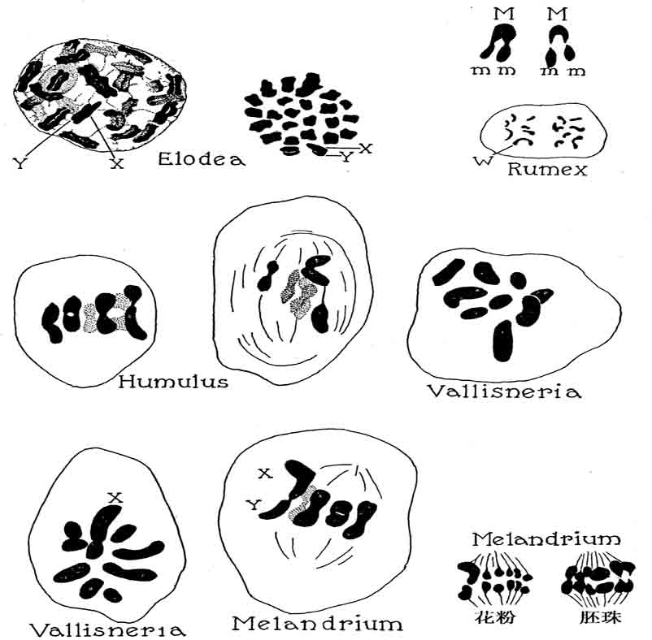

雌雄异株显花植物中的性染色体
1923年的惊人事件之一，是四位独立的研究者同时发表了在雌雄异株的若干植物中存在着XX—XY型的机制。Santos在Elodea雄株的体细胞里发现了48条染色体（图123），其中有23对常染色体和一对大小不同的XY。X和Y在成熟时分开。结果得两种花粒，一种有X，一种有Y。
另有两位细胞学家木原均和小野知夫，在酸模属Rumex雄株的体细胞内，发现了15条染色体，由6对常染色体和3条异染色体（m 1 、m 2 和M）组成。当生殖细胞成熟时，这三条异染色体集合成一群（图123）。M进入一极，两条较小的m 1 和m 2 则进入另一极。结果得出两种花粉粒，6a+M和6a+m 1 +m 2 。后者决定雄性。
Winge在Humulus lupulens和H.japonica两种植物中发现一对XY染色体。雄株有9对常染色体和一对XY。在苦草（Vallisneria spiralis）的雄株里，Winge也发现了一条不成对的X染色体，其公式为8a+X。
Correns根据繁育工作，断定Melandrium（娄菜属）的雄株有异形配子。根据Winge的报道，雄性公式为22a+X+Y，证实了Correns的推论。
Blackburn女士也发表了，在Melandrium的雄株里，有一对长短不同的染色体。她添上了一个更重要的证据。雌株有两条同样大的性染色体，其中有一条相当于雄株的一条性染色体（图123）。在成熟分裂时，这两条染色体彼此结合，然后进行减数分裂。

图123 几种雌雄异株植物成熟分裂时的染色体群：Rumex，酸模属；Humulus，
 草属；Vallisneria，苦草属；Melandrium，娄菜属（仿Bělar）
草属；Vallisneria，苦草属；Melandrium，娄菜属（仿Bělar）
我认为，我们可以有把握地从以上证据作出下一结论，即至少有若干雌雄异株的显花植物，在性别决定上，采用了许多动物所有的同一机制。